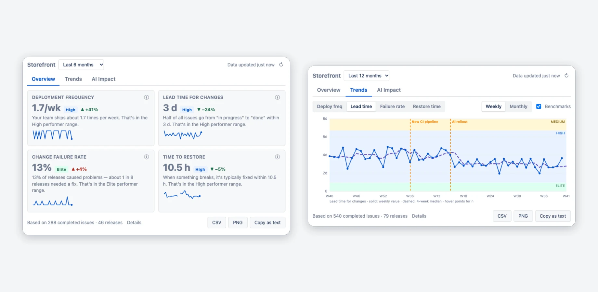
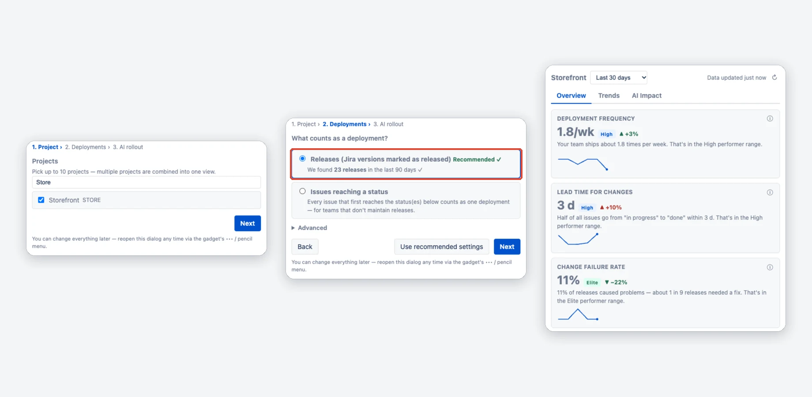
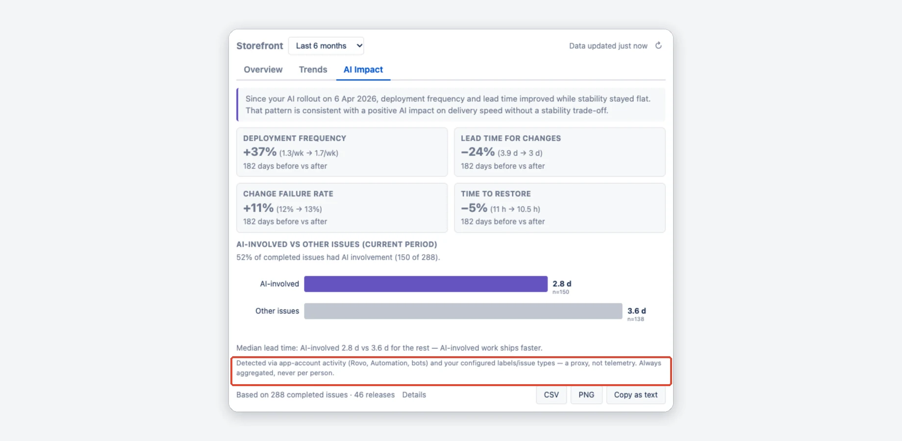
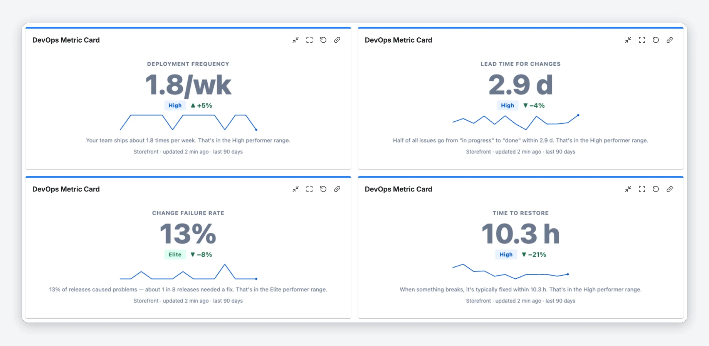
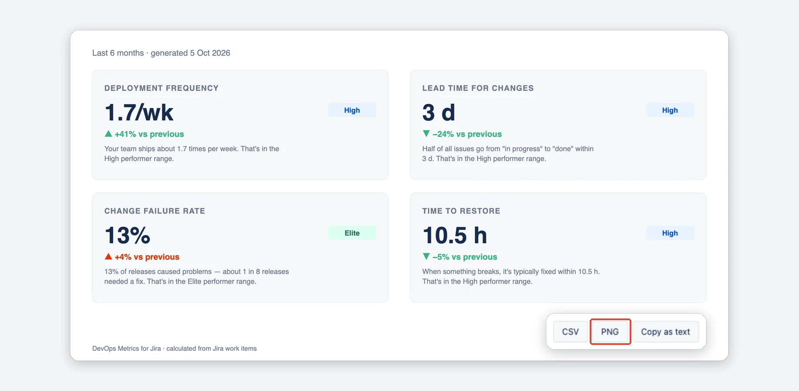
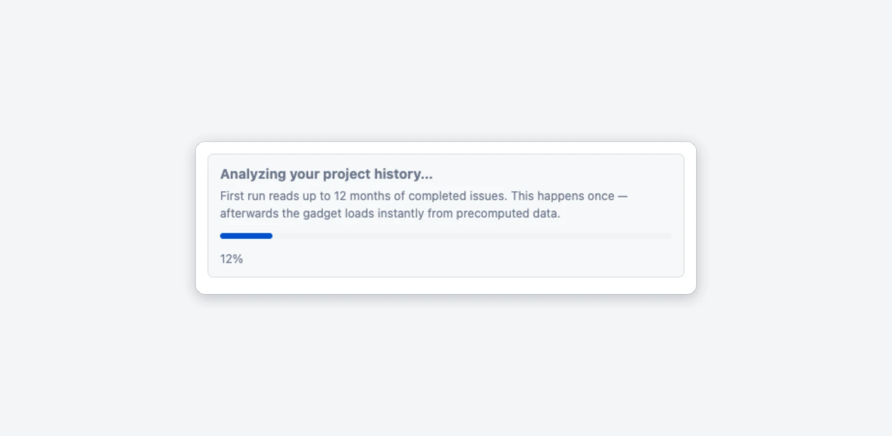

DevOps Metrics for Jira — Documentation
All four DORA™ metrics on any Jira dashboard, calculated from the Jira data you already have. No CI/CD setup.
On this page
Quick start
- Install the app from the Atlassian Marketplace.
- On a Jira dashboard, choose Add gadget, search for “DevOps Metrics” and add DevOps Metrics — Overview. It shows sample data first.
- Open the gadget’s Edit (pencil) menu and pick your project.
- Click Use recommended settings. The first analysis usually takes about a minute.
- Optional (Pro): enter your AI rollout date in step 3 of the wizard, or add DevOps Metric Card gadgets for a wallboard.
Overview
The app puts the four delivery metrics of the DORA™ research on a Jira dashboard gadget:
- Deployment frequency: how often you ship.
- Lead time for changes: how long work takes from start to done.
- Change failure rate: the share of releases that caused problems.
- Time to restore: how quickly you recover when something breaks. It is a median, even though the common abbreviation is MTTR.
Everything comes from Jira releases, status changes, bugs and incident tickets. Every number has a benchmark band, a plain-language sentence and an ⓘ that explains the calculation. The gadget has three tabs: Overview, Trends and AI Impact (Pro).

Setup
Add the gadget, pick a project and accept the recommendation. You do not need to connect any CI/CD tool.
- Add the gadget: on a Jira dashboard, choose Add gadget, search for “DevOps Metrics” and add DevOps Metrics — Overview. It starts with built-in sample data, marked SAMPLE, so you can try every tab first.
- Pick your project: open the gadget’s Edit (pencil) menu. Step 1 of the wizard lists the projects you can browse. Pro: up to 10, combined into one view.
- Accept the recommendation: with at least three released versions in the last 90 days, the wizard recommends Releases and shows how many it found. Otherwise it recommends Issues reaching a status. Use recommended settings saves and skips step 3 (AI rollout), which you can add later.

When the gadget stays empty
- No issue reached a Done status in the analysed period.
- All completed work sits on sub-tasks. They are excluded unless you tick Include sub-tasks in lead time & throughput (Pro, under Advanced).
- Releases mode, but no Jira version is marked as released with a release date.
The first analysis reads up to 12 months of history once. After that the gadget loads from precomputed weekly numbers, refreshed nightly and with the ↻ button.
Configuration
The wizard decides what counts as a deployment, an incident and AI-assisted work. Reopen it via the gadget’s ••• / pencil menu; a changed definition starts a recalculation.
Step 2 — What counts as a deployment?
- Releases: every Jira version marked as released with a release date counts as one deployment.
- Issues reaching a status: every issue that first reaches one of the statuses you pick counts as one deployment. The statuses default to your Done statuses.
Both options are in Free.
Advanced PRO
- Incident types: which issue types count as incidents for time to restore. Default: types whose name contains bug, incident, outage or defect.
- Sub-tasks: include them in lead time and throughput, or leave them out (default).
Step 3 — AI rollout PRO (optional)
Feeds the AI Impact tab: the rollout date, the labels that mark AI-assisted issues (up to 10), which AI signals to use, optional “AI task” issue types, and up to five extra chart markers (label up to 24 characters). Free sites see this step greyed out.
How the metrics are calculated
What each number means and how it is counted. The app counts per ISO week. The period selector (Last 30 days, Last 90 days, Last 6 months, Last 12 months) adds up those weeks. Durations are medians (P50), so a few outliers don’t distort them.
| Metric | Calculation (default definitions) |
|---|---|
| Deployment frequency | Released Jira versions (or first transitions into your chosen statuses) per week, averaged over the completed weeks of the period; the week in progress is left out. Shown per week or per month, whichever reads better. |
| Lead time for changes | Median time from the first transition into the status category In Progress to the last transition into Done, for issues completed in the period. Re-opened issues count from their final completion. |
| Change failure rate | Share of releases with at least one bug raised within 14 days after the release, linked via fix or affected version. A bug without a version counts for the most recent release before it, if that was within 14 days. In “Issues reaching a status” mode it is the re-open rate (transitions out of Done ÷ into Done). |
| Time to restore | Median time from an incident-type issue being created to it being resolved, for incidents resolved in the period. |
The arrow (▲/▼) compares with the previous period of the same length. Benchmark bands follow the published DORA™ research (the classic Elite/High/Medium/Low model) and can’t be changed.
Band limits, small samples and missing comparisons
With fewer than 5 releases or incidents, the change failure rate and time to restore tiles add “treat as directional”. Bugs are issues of a type named like “Bug”. When the analysed history doesn’t cover the previous period, the tile shows “— not enough history for a comparison” instead of an arrow (see the FAQ).
| Metric | Elite | High | Medium | Low |
|---|---|---|---|---|
| Deployment frequency | 7 or more per week | 1 to 7 per week | about 1 per month to 1 per week | less than about 1 per month |
| Lead time for changes | under 1 day | under 1 week | under 30 days | 30 days or more |
| Change failure rate | 15% or less | up to 30% | up to 45% | over 45% |
| Time to restore | under 1 hour | under 1 day | under 1 week | 1 week or more |
Reading the trend charts
The Trends tab plots one metric over the selected period, Weekly or Monthly. In the weekly view the dashed line is a 4-week rolling median. Hover a point to see how many items it is based on.
Benchmarks shades the bands behind the line. Dashed vertical lines mark events: your AI rollout date automatically, plus up to five of your own PRO from step 3 of the wizard.
Data quality & exclusions
The footnote under every view says what the numbers are based on, for example “Based on 142 completed issues · 12 releases · 8 excluded”. Click Details to see what was left out and why.
What Details lists
- issues that never passed through In progress (lead time not measurable),
- issues with inconsistent dates, and sub-tasks (if excluded),
- released versions without a release date,
- how each change-failure bug was matched (version link or time),
- a warning when a project has more than 10,000 completed issues in 12 months and only the most recent 10,000 were analysed.
AI Impact PRO
The AI Impact tab shows whether delivery changed after your team started with AI tools (Copilot, Rovo, Claude, Cursor …). Set the rollout date in step 3 of the wizard.
- Before and after: two equally long periods around the rollout date, compared on all four metrics, with a rule-based verdict in plain language (no AI model). Both periods are as long as the time since the rollout, at most a year.
- AI-involved vs other issues: median lead time and share of the completed work, for the period selected in the gadget.

AI involvement is detected by three signals; any one of them is enough, and each can be switched off:
- App-account activity: a Rovo agent, Automation for Jira or another app changed the issue’s status.
- Labels: defaults
ai-assisted,copilot,rovo. - Issue types: if your team has an “AI task” type.
How long the two periods are
Both periods are as long as the time since the rollout (at most a year) and never longer than the analysed history before it, so the “before” side always lies within your data. The comparison doesn’t depend on the period selector. With less than a week of history on either side, the tab says so instead of comparing.
The Metric Card gadget PRO
The DevOps Metric Card gadget shows one metric large enough to read across the room: value, band, arrow, sparkline and sentence. Made for a wallboard.
- Settings: one project, one metric, one period (default: Last 30 days). Add one card per metric. Jira reloads each card every 3 hours.
- Definitions: the card uses the definitions the project was last set up with in the Overview gadget, or the defaults. Change them in the Overview settings.

Exports PRO
Take what the gadget shows into a report. The buttons sit under every tab of the Overview gadget.
- PNG: a report image of the four tiles. On the Trends tab it saves the current chart instead.
- CSV: one row per week of the selected period.
- Copy as text: a Markdown table (value, change vs previous, band) plus the plain-language sentences, ready for Confluence, Slack or e-mail.

CSV columns
Week, deployments, completed issues, lead time P50 and P85 (hours), failed releases, releases, change failure rate, time to restore P50 (hours), incidents, AI-involved issues and excluded issues.
Free vs Pro
Free for Jira sites with up to 10 users; larger sites start with a free trial. Pro features are on while your site has an active subscription, the trial included. Without one, for example after the trial, the Overview gadget keeps working in Free mode. Pricing is on the Marketplace listing.
| Free | Pro | |
|---|---|---|
| Overview gadget (tiles, benchmark bands, trends, plain-language sentences) | ✓ (1 project) | ✓ |
| Deployment definition (releases or status) | ✓ | ✓ |
| Advanced: incident types, sub-tasks | — | ✓ |
| Several projects in one gadget (up to 10) | — | ✓ |
| AI Impact tab and AI rollout settings | — | ✓ |
| Extra event markers on trend charts | — | ✓ |
| DevOps Metric Card gadget | — | ✓ |
| PNG, CSV and Copy as text exports | — | ✓ |
FAQ & troubleshooting
Click a question to see the answer.
The gadget shows “Sample data”.
That is the built-in demo shown before configuration. Open Edit (pencil) and pick your project.
The gadget says there is no data.
The analysis found nothing to chart, and the message names the reason and what to change: no completed issues, only sub-tasks, no released versions, releases without a date, or issues that never passed through an in-progress status. See what your project needs. The Metric Card shows the same explanation; change the setting in the Overview gadget for that project.
A tile shows “— not enough history for a comparison”.
The arrow compares with the previous period of the same length, and the analysed history doesn’t reach back to the start of that period. This is typical for Last 12 months, because the first analysis reads 12 months. The value itself is correct; pick a shorter period to see a comparison.
Deployment frequency is zero.
In Releases mode the app counts versions marked as released with a release date. If your team doesn’t maintain releases, switch the deployment definition to Issues reaching a status in the wizard.
“Analyzing your project history…” takes a while.
The first run reads up to 12 months of completed issues (at most the most recent 10,000), usually in about a minute and longer for very large projects. It happens once.

The numbers look out of date.
Data is refreshed nightly for projects opened in the last 45 days. Click ↻ for an update now; it is limited to one refresh per project every 10 minutes.
Lead time shows “—” or leaves out many issues.
Lead time needs a transition into an in-progress status. Issues created straight into Done can’t be measured; they still count for throughput, and the Details popup lists them.
The change failure rate seems too high or too low.
Check the Details popup for how bugs were matched to releases. Setting the affected version on bugs makes it most accurate; with few releases the rate swings widely.
Time to restore shows no incidents.
Only incident-type issues resolved in the period count. By default these are types named like bug, incident, outage or defect; Pro lets you pick the types under Advanced.
“You don’t have access to this gadget’s project”.
The app checks Jira project permissions for every viewer: you only see metrics for projects you can browse. Ask your Jira admin for access, or pick another project.
The AI Impact tab asks for a date even though I saved one.
Make sure the date was set in step 3 of the wizard and saved. The date field on the tab itself is a preview only.
Support
- Email: support@janekbehrens.de
- Support page: DevOps Metrics support
- See also: Privacy Policy · Security Policy · Terms of Service
DORA™ is a trademark of Google LLC. DevOps Metrics for Jira is an independent product by Janek Behrens and is not affiliated with or endorsed by Google. “DORA™ metrics” refers to the four software delivery metrics defined by the DevOps Research and Assessment program.